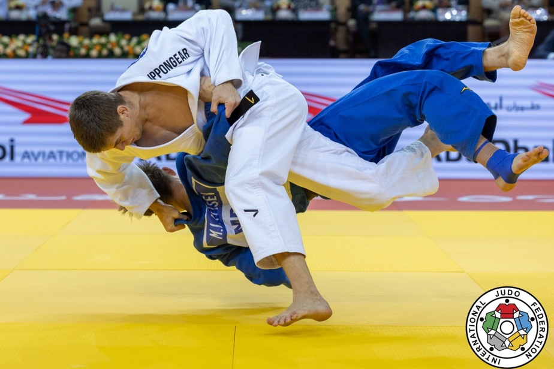

Palmarès
Médailles &
Médailles &
Victoires
11 médailles sur le circuit mondial IJF — dont deux titres en or en 2025. Une progression qui place François parmi les meilleurs au monde.
Grand Slam IJF
Grand Slam Paris
2025 · –81 kg
Grand Slam IJF
Grand Slam Abu Dhabi
2025 · –81 kg
Championnats panaméricains
Pan Am Championships
2023 · –81 kg
Open panaméricain
Pan American Open Montréal
2025 · –90 kg
Grand Slam IJF
Grand Slam Antalya
2024 · Finale vs Nagase (JPN)
Grand Slam IJF
Grand Slam Bakou
2025 · –81 kg
Jeux du Commonwealth
Commonwealth Games
2022 · Birmingham
Championnats panaméricains
Pan Am Championships
2024 · –81 kg
Grand Slam IJF
Grand Slam Bakou
2021 · Première médaille GS
Grand Slam IJF
Grand Slam Tel Aviv
2022 & 2023 · ×2 bronzes
Grand Slam IJF
Grand Slam Paris
2023 & 2024 · ×2 bronzes
Grand Slam IJF
Grand Slam Tokyo
2024 · –81 kg

Finale · Abu Dhabi GS 2025 🥇

En action · Circuit IJF

Judoka Canadien · Équipe Canada
Chronologie de carrière
2016
Premiers pas sur la scène internationale
Bronze aux Championnats panaméricains juniors à Buenos Aires · –73 kg
2018
Blessure grave au genou
Interruption forcée de carrière — il reviendra plus fort que jamais
2021
Retour sur le circuit mondial IJF
Première médaille Grand Slam à Bakou 🥉 · Passe en catégorie –81 kg
2022
Confirmation internationale
Bronze Grand Slam Tel Aviv · Argent Jeux du Commonwealth (Birmingham) · 4 podiums en circuit IJF
2023
Consécration panaméricaine & top 5 mondial
Champion panaméricain 🥇 · 5e aux Championnats du monde de Doha · 3 podiums Grand Slam
2024
Première finale Grand Slam & Jeux Olympiques
Argent Antalya (finale vs Nagase, champion olympique) · Olympien à Paris · Bronze Tokyo
2025
Année de tous les records 🏆
Champion Grand Slam Paris · Champion Grand Slam Abu Dhabi · Argent Bakou · #2 mondial · 11e médaille en circuit IJF